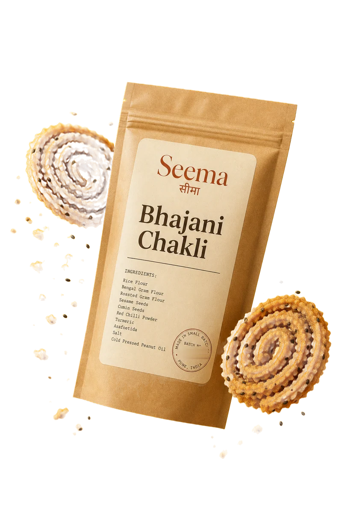
₹ ___ · 250 g · this week’s batch
Addscroll — slowly is fine
one pair of hands.
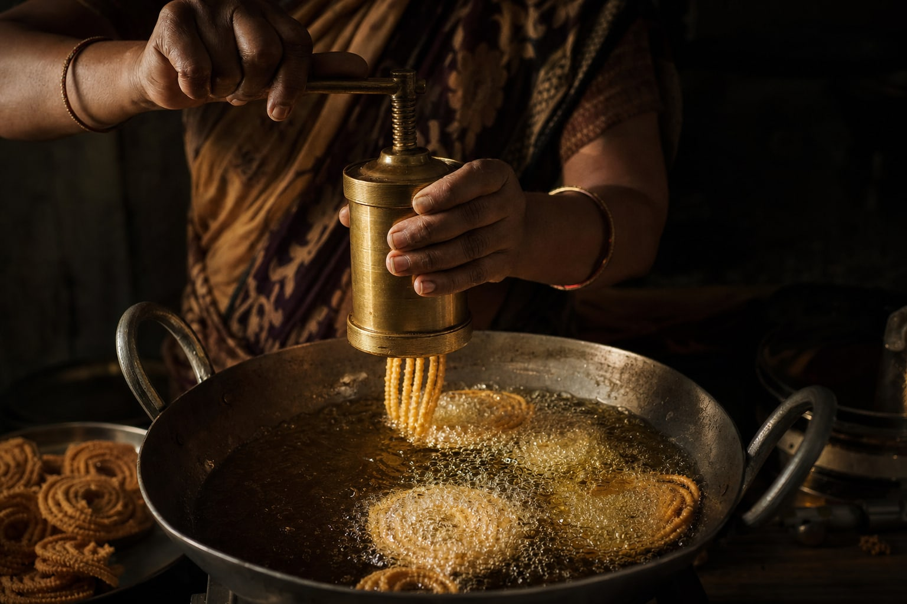
00:00
chapter one — the label, out loud
0 palm oil · 0 preservatives · 0 colours · 0 machines
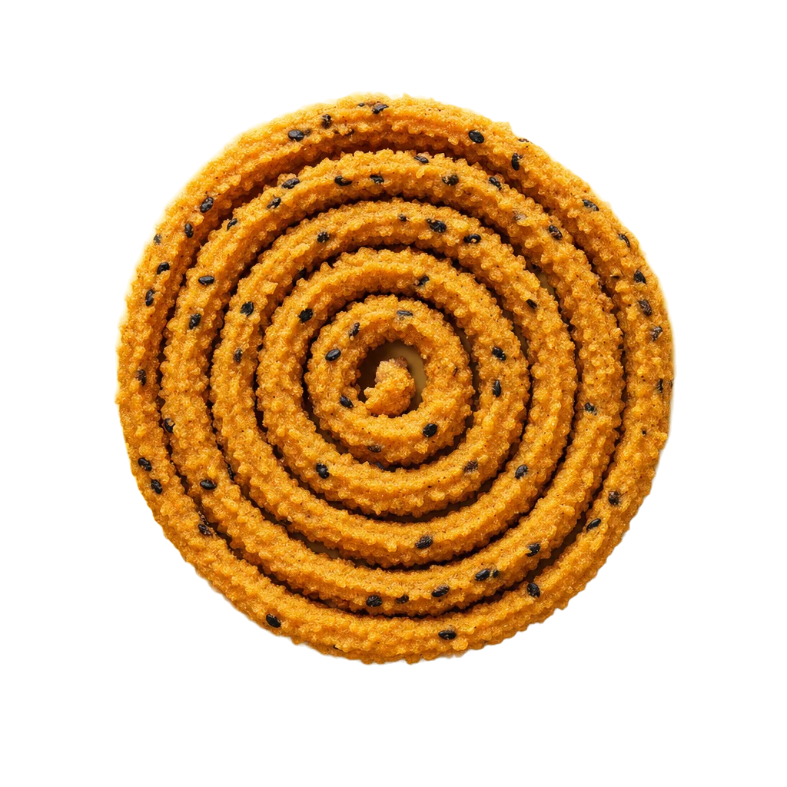
chapter two — the mirror
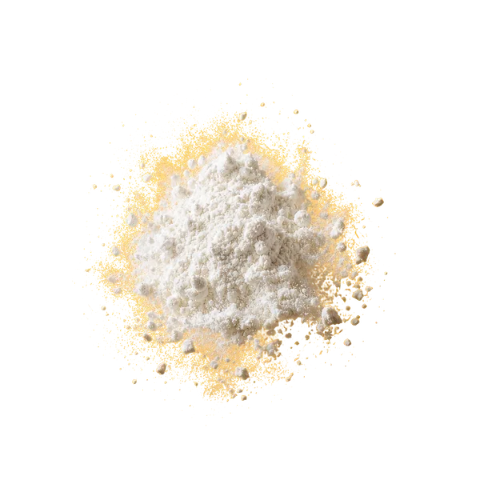
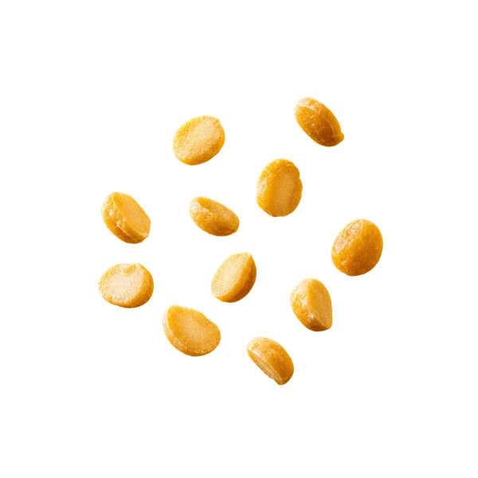
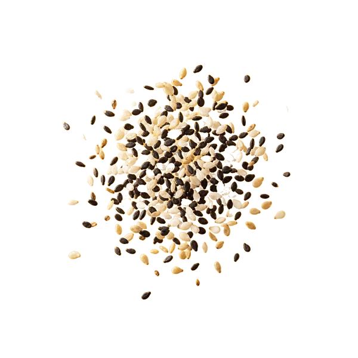
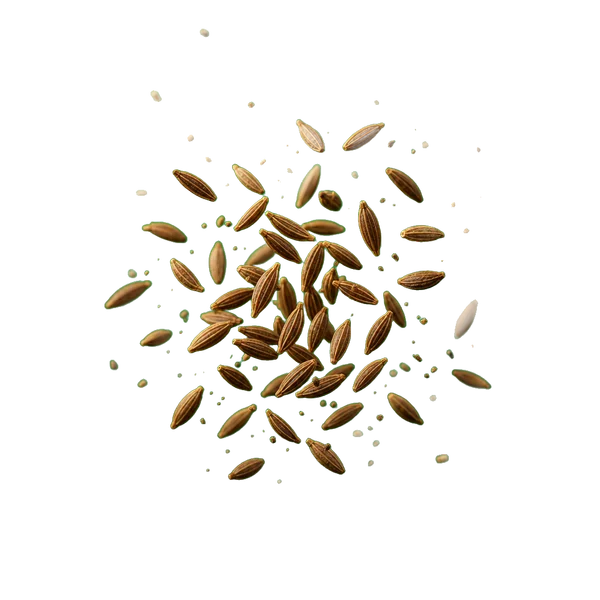
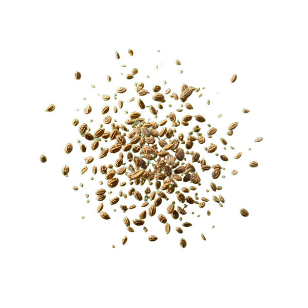
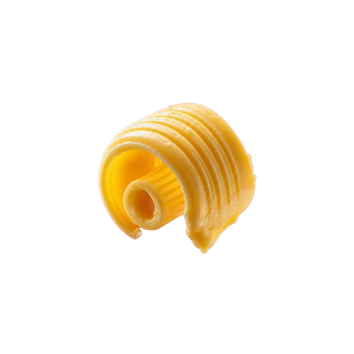
rice flour — milled this month
chana dal — roasted at home
sesame — toasted same morning
cumin — ground the day of frying
ajwain — from the same shop for years
butter — white, churned at home
curry leaves — fried in the same oil
dried chili — ground coarse, never fine
peanuts — roasted, skins split
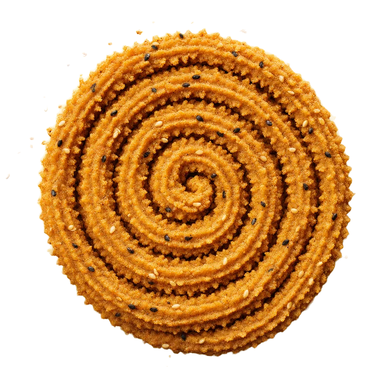
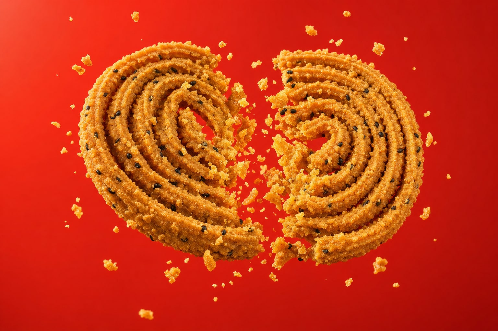

₹ ___ · 250 g · this week’s batch
Add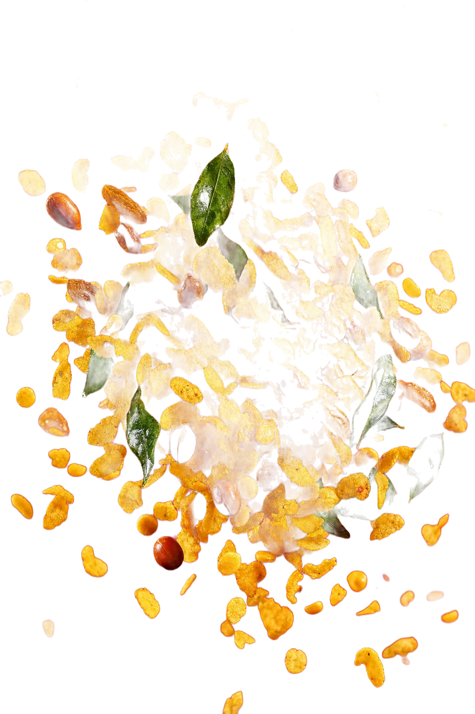
₹ ___ · 250 g · this week’s batch
Add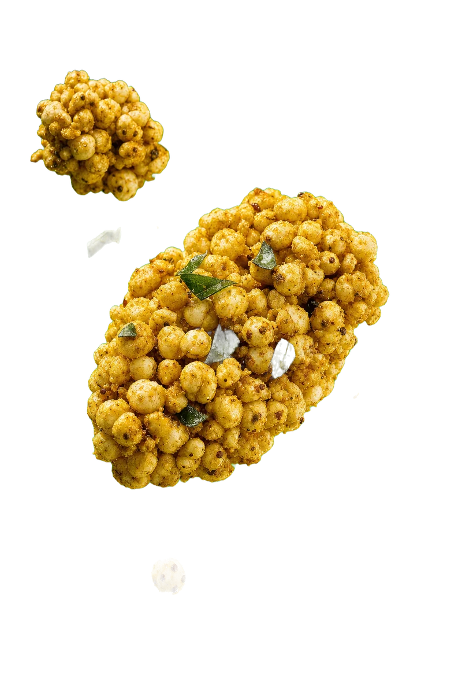
₹ ___ · 250 g · this week’s batch
Addorders close friday · fried saturday · shipped monday
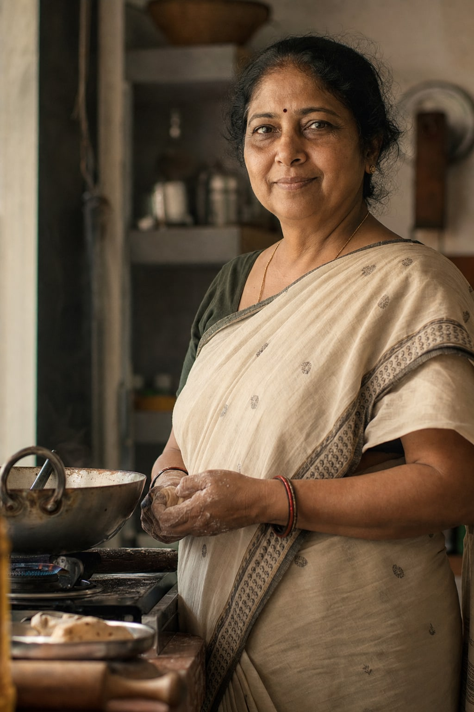
सीमा
chapter three — the calendar
batch 0117 · orders close friday
orders on whatsapp · instagram @seema.kitchen · pune